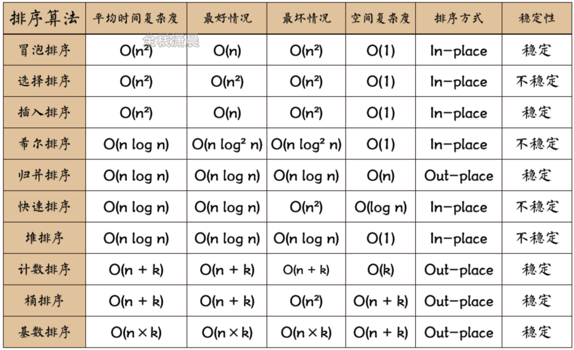
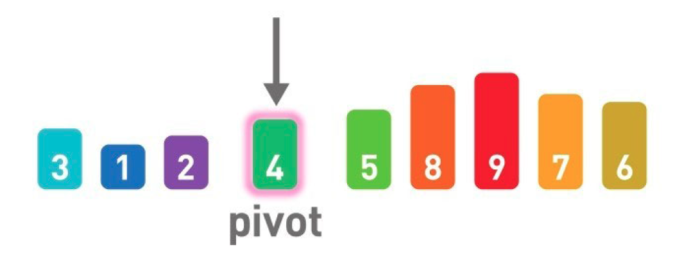

数据结构
链表
概念类简述：
- 数据线性排列，每个数据都有 1 个指针，指针指向下一个数据内存地址。
- 链表概念图：a–>b–>c
- 数据访问耗时：链表是分散存储，顺序访问的：要想访问某数据，需从第 1 个数据顺着指针向下访问
- 数据新增/删除方便：链表新增/删除只需改变指针指向就可以了
- 时间复杂度：新增/删除 O(1)，访问 O(n)
- 拓展：循环链表、双向链表
数组
概念类简述：
- 数据访问方便：存储连续空间，数据都有对应内存地址，可以通过 arr[i] 随机访问某个数据
- 新增/删除耗时：需要移动数据，挪出位置
- 时间复杂度：新增/删除 O(n)，访问 O(1)
栈
概念类简述：
- 线性排列数据结构，后进先出
队列
概念类简述：
- 线性排列数据结构，先进先出
哈希表
概念类简述：
- 哈希表存储的是 key-value 形式的数据
- 哈希表可解决线性查找耗时问题
- 存储数据：例如: {bom: man}，数组长度为 5
- bom 通过哈希函数计算哈希值为 5278，用 5278 对数组长度 5 取余得 3，所以将 bom 放在 3 号箱，如 3 号箱已有数据（存在冲突），则在 3 号箱使用链表（链地址法），线性存储
- 解决冲突有链地址法、开放地址法（应用较广泛，存在冲突就在数组上不断计算出候补位置存放）

查找数据 bom：计算 bom 哈希值然后 mod 5 得到 3, 在 3 号箱进行线性查找
哈希表给数组设定合适的空间很重要，空间大，容易浪费，空间小，容易冲突，线性查找时间长
堆
概念类简述：
- 堆是一种图的树形结构，被用于实现优先队列（自由添加数据，从最小值按顺序取出），适用频繁取最小值
- 堆每个节点最多两个子节点，节点排序为从上到下，从左到右
- 子节点必定大于父节点，添加/删除
- 取最小值（顶端）O(1)，添加/取值 O(logn)
二叉查找树
概念类简述：
- 每个节点最多 2 子节点
- 性质：（1）每个节点值必大于其左子树任一节点值；（2）每个节点值必小于其右子树任一节点值
- 顶点开始沿左下末端查找查最小值，右下末端查找最大值
- 树均衡 O(logn)，单侧树 O(n)
排序
冒泡
思想-相邻比较大小：比较所有相邻的两个项，如果第一个比第二个大，则交换它们
时间复杂度：O(n2)
实现思路：
- 比较相邻的两个元素，如果前一个比后一个大，则交换位置；
- 比较完第一轮后，最大的元素在最右边，该元素不参与下一轮比较；
- 回到步骤一，直至对比完所有元素；
function bubbleSort(arr) {
for (let i = 0; i < arr.length; i++) {
for (let j = 0; j < arr.length - 1 - i; j++) {
if (arr[j] > arr[j + 1]) {
// let temp = arr[j];
// arr[j] = arr[j+1];
// arr[j+1] = temp;
[arr[j], arr[j + 1]] = [arr[j + 1], arr[j]];
}
}
}
return arr;
}
console.log(bubbleSort([15, 1, 62, 25, 11]));
选择
思想-找最小值：从待排序数据中寻找最小值（线性查找），将其与序列最左边数字进行交换；
时间复杂度：O(n2)
实现思路：
- 设当前最小值及其索引为第 n（n 从 0 开始） 个数；
- 如果 n+1 的值比 n 小，则将 n+1 作为当前最小值及最小值索引；
- 第一轮结束后，将得到的最小值和待排序序列最左边的数字交换；
- 回到步骤一，直至对比完所有元素；
function selectSort(arr) {
for (let i = 0; i < arr.length - 1; i++) {
let min = arr[i];
let index = i;
for (let j = i + 1; j < arr.length; j++) {
if (min > arr[j]) {
min = arr[j];
index = j;
}
}
[arr[i], arr[index]] = [min, arr[i]];
}
return arr;
}
console.log(selectSort([15, 1, 62, 25, 11]));
插入
思想：从右侧未排序区域取一个数据将它插入到已排序区域内合适的位置；
时间复杂度：O(n2)
实现思路：
- 从第一个元素开始，该元素默认为已被排序；
- 取出下一个元素 A，在已排序序列中从后向前扫描；
- 如果 A 大于已归位数字 n 则交换两个数字，直至 A 小于已归位数字 n，结束一轮排序；
- 回到步骤 2，直至对比完所有元素；
function insertSort(arr) {
for (let i = 1; i < arr.length; i++) {
let index = i;
let currentValue = arr[i];
while (index > 0 && currentValue < arr[index - 1]) {
arr[index] = arr[index - 1]; // 移位
index--;
}
arr[index] = currentValue;
}
return arr;
}
console.log(insertSort([15, 1, 62, 25, 11]));
堆
思想：按降序用数据构建堆，然后从堆的顶点依次取值
时间复杂度：O（nlogn）
实现思路
归并
思想-先分后合：分-将序列不断折中分成两个序列，直至每个序列只有一个数据停止，归并-将两个排好序的序列合成一个序列，直至只有一个序列停止
时间复杂度：O（nlogn）
实现思路
- 将数组以 n/2 为中心分成两个子序列；
- 回到步骤 1（递归），直至子序列长度均为 1；
- 从长度为 1 的子序列开始，从下往上排序归并；
- 回到步骤 3（递归），直至子序列长度均为 1；
const arr = [1, 6, 7, 8, 9, 3, 5, 4, 2];
function mergeSort(arr) {
if (arr.length <= 1) {
return arr;
}
const middleIndex = Math.floor(arr.length / 2);
const leftArr = arr.slice(0, middleIndex);
const rightArr = arr.slice(middleIndex);
return merge(mergeSort(leftArr), mergeSort(rightArr));
}
function merge(leftArr, rightArr) {
let sortArr = [];
while (leftArr.length > 0 && rightArr.length > 0) {
if (leftArr[0] <= rightArr[0]) {
sortArr.push(leftArr.shift());
} else {
sortArr.push(rightArr.shift());
}
}
if (leftArr.length) {
sortArr = sortArr.concat(leftArr);
}
if (rightArr.length) {
sortArr = sortArr.concat(rightArr);
}
return sortArr;
}
console.log(mergeSort(arr));
快速排序
思想-“分治法”：随机选择 1 基准值，比基准值小的放在基准值左边，大的放右边，不断重复此操作，直至排序完成；如：[比基准值小的数] 基准值 [比基准值大的数]
时间复杂度：每次基准值分离的子序列为原来一般O（nlogn），每次基准值为最小值O（n2）
实现思路
- 以一个数为基准（通常是中间的数），比基准小的放到左边，比基准大的放到右边；
- 将上述左边和右边的数据分别递归快排，将处理后的数据和基准值合并成一个新数组，返回；
原数据：3 5 8 1 2 9 4 7 6
function quickSort(arr) {
if (arr.length <= 1) {
return arr;
}
let pivotIndex = Math.floor(arr.length / 2);
let pivot = arr.splice(pivotIndex, 1)[0];
let left = [];
let right = [];
for (let i = 0; i < arr.length; i++) {
if (arr[i] < pivot) {
left.push(arr[i]);
} else {
right.push(arr[i]);
}
}
return quickSort(left).concat([pivot], quickSort(right));
}
console.log('quickSort result: ', quickSort([15, 1, 62, 25, 11]));
数组的查找
线性查找
概念类简述：
- 在数组中查找数据的算法，从头开始依次往下不断的检查数据是否是目标数据
- 时间复杂度 O(n)
const arr = [1, 6, 7, 8, 9, 3, 5, 4, 2];
function linear(arr, number) {
for (let i = 0; i < arr.length; i++) {
if (arr[i] === number) {
return `index:${i}; value:${arr[i]}`;
}
}
// -1 代表没找到
return -1;
}
console.log(linear(arr, 1));
二分查找
概念类简述：
- 在数组中查找数据的算法，只能查找已排好序的数据
- 通过比对目标数据与数组中间数据大小，判断目标数据在中间的左边还是右边，不断缩小目标范围，直至找到数据或数据不存在
- 时间复杂度 O(logn)
const arr = [1, 6, 7, 1, 9, 3, 5, 4, 2];
function sort(arr) {
return arr.sort();
}
const sortArr = sort(arr);
// 利用递归
function binary(sortArr, number) {
if (sortArr.length <= 1) {
return sortArr[0] === number ? sortArr[0] : -1;
}
const middleIndex = Math.floor(sortArr.length / 2);
if (number === sortArr[middleIndex]) {
return sortArr[middleIndex];
}
if (number < sortArr[middleIndex]) {
return binary(sortArr.slice(0, middleIndex), number);
} else {
return binary(sortArr.slice(middleIndex + 1), number);
}
}
console.log(binary(sortArr, 1), "uuu");
图的搜索
概念类简述：
- 常用于解决最短路径问题
广度优先搜索（BFS）
概念类简述：
- 候补顶点用“先入先出”队列来管理
- 起点开始，由近到远进行广泛搜索，目标数据离顶点越近，搜索结束越快
实现思路：
- 定义变量数组储存依次遍历的节点
- 用 while + forEach，不断遍历向变量中 push 后续查找的节点
- 找到目标值，中断查找
- 所有节点都遍历玩为找到目标值，返回 -1
const { tree } = require("../../assets/mock/index");
// 利用队列先进先出的思想
function breadthFirst(treeObj, target) {
if (!treeObj) return;
const searchStep = [];
const queue = [treeObj];
while (queue.length) {
const currentNode = queue.shift();
const { name, children } = currentNode;
searchStep.push(name);
if (name === target) {
return { name, searchStep };
}
children.forEach((child) => queue.push(child));
}
return -1;
}
console.log(breadthFirst(tree, "G"));
深度优先搜索（DFS）
概念类简述：
- 从顶点沿一条路径不断往下搜索至路径终点，折返，从下一候补路径继续搜索，直至搜索到目标数据结束
- 候补顶点用“后入先出”栈来管理
const { tree } = require("../../assets/mock/index");
// 利用栈后进先出的思想
function depthFirst(treeObj, target) {
if (!treeObj) return;
const searchStep = [];
const stack = [treeObj];
while (stack.length) {
const currentNode = stack.pop();
const { name, children } = currentNode;
searchStep.push(name);
if (name === target) {
return { name, searchStep };
}
for (let i = children.length - 1; i >= 0; i--) {
// 从左树开始查找
// for (let i = 0; i < children.length; i++) { // 从右树开始查找
stack.push(children[i]);
}
}
return -1;
}
console.log(depthFirst(tree, "G"));
// 利用递归的思想沿一棵树从上到下遍历
function depthFirst1(treeObj, target) {
const searchStep = [];
let result = null;
const dfs = (treeObj) => {
const { name, children } = treeObj;
searchStep.push(name);
if (name === target) {
return (result = { name, searchStep });
}
while (children.length) {
const currentNode = children.shift();
!result && dfs(currentNode);
}
};
dfs(treeObj);
return result;
}
console.log(depthFirst1(tree, "G"));
二叉树先序遍历
- 遍历树如下：
- 先序（先根）遍历：根->左->右，所以遍历顺序为 A-B-D-F-G-H-I-E-C
// 利用栈迭代：O(n)
var preorderTraversal = function (root) {
let values = [];
let stack = [root];
while (stack.length) {
const node = stack.pop();
const { left, val, right } = node;
values.push(val);
right && stack.push(right);
left && stack.push(left);
}
return values;
};
二叉树中序遍历
- 中序（中根）遍历：左->根->右，所以遍历顺序为 F-D-H-G-I-B-E-A-C
// 采用递归：先递归左子树，返回根元素，再递归右子树， O(n)
var inorderTraversal = function (root) {
let values = [];
const inorder = (root) => {
if (!root) return;
inorder(root.left);
values.push(root.val);
inorder(root.right);
};
inorder(root);
return values;
};
// 利用栈迭代解决：O(n)
var inorderTraversal1 = function (root) {
let values = [];
let stack = [];
while (root || stack.length) {
while (root) {
stack.push(root);
root = root.left;
}
const node = stack.pop();
values.push(node.val);
root = node.right;
}
return values;
};
二叉树后序遍历
- 后序（后根）遍历：左->右->根，所以遍历顺序为 F-H-I-G-D-E-B-C-A
var postorderTraversal = function (root) {
let values = [];
let stack = [];
while (root || stack.length) {
while (root) {
values.unshift(root.val);
stack.push(root);
root = root.right;
}
root = stack.pop();
root = root.left;
}
return values;
};
// 采用递归：先递归左子树，再递归右子树，返回根元素， O(n)
var postorderTraversal1 = function (root) {
let values = [];
const postorder = (root) => {
if (!root) return;
postorder(root.left);
postorder(root.right);
values.push(root.val);
};
postorder(root);
console.log(values, "values");
};
二叉搜索树
参考：实现一个二叉搜索树
- 定义：左子树不为空，则左子树所有节点值小于根节点；右子树不为空，则右子树所有节点值大于根节点
- 优点：插入、删除、查找更高效，平均时间复杂度为 O(logn)
class BST {
constructor(root = null) {
this.root = root; // 初始化根节点
this.count = 0; // 记录节点数量
// 实例化一个 node 节点
this.Node = function (value) {
return {
value,
left: null,
right: null,
};
};
}
_insert(node, value) {
if (node === null) {
this.count++;
return new this.Node(value);
}
if (value === node.value) {
// 值相同的节点，如果是无重复二叉搜索树，则是更新节点操作
console.log("duplicate node: ", value);
} else if (value < node.value) {
// 左子树插入节点
node.left = this._insert(node.left, value);
} else {
// 右子树插入节点
node.right = this._insert(node.right, value);
}
return node;
}
_minNode(node) {
while (node !== null) {
if (node.left === null) {
return node;
}
node = node.left;
}
}
_removeNode(node, value) {
// 1. 没找到，返回 null
if (node === null) return null;
// 2. 左侧节点递归查找删除节点
if (value < node.value) {
node.left = this._removeNode(node.left, value);
return node;
}
// 3. 右侧节点递归查找删除节点
if (value > node.value) {
node.right = this._removeNode(node.right, value);
return node;
}
// 4. value === node.value, 找到节点
// 4.1 节点左右子树为 null 直接删除节点
if (node.left === null && node.right === null) {
node = null;
this.count--;
return node;
}
// 4.2 节点只有左子树为 null 用右侧子树替换当前节点
if (node.left === null) {
node = node.right;
this.count--;
return node;
}
// 4.3 节点只有右子树为 null 用左侧子树替换当前节点
if (node.right === null) {
node = node.left;
this.count--;
return node;
}
// 4.4 节点左右子树都存在，需从右子树中找到最小节点替换当前节点，并删除最小节点
let rightMinNodeValue = this._minNode(node.right).value;
let dummy = new this.Node(rightMinNodeValue);
dummy.left = node.left;
dummy.right = this._removeNode(node.right, rightMinNodeValue);
node = null;
this.count--;
// 返回 dummy 节点替代 node
return dummy;
}
// 插入节点
insert(value) {
this.root = this._insert(this.root, value);
}
// 查找节点
search(value) {
let dummy = this.root;
while (dummy !== null) {
if (value === dummy.value) {
return dummy;
} else if (value > dummy.value) {
dummy = dummy.right;
} else {
dummy = dummy.left;
}
}
return null;
}
// 最小节点
minNode() {
return this._minNode(this.root).value;
}
// 最大节点
maxNode() {
let dummy = this.root;
while (dummy !== null) {
if (dummy.right === null) {
return dummy.value;
}
dummy = dummy.right;
}
}
// 移除节点
removeNode(value) {
this.root = this._removeNode(this.root, value);
}
}
const bst = new BST();
const testTree = [30, 25, 36, 20, 28, 32, 40, 27, 31, 34];
for (let i = 0; i < testTree.length; i++) {
bst.insert(testTree[i]);
}
// console.log(bst.root, "bst");
// console.log(bst.search(322));
// console.log(bst.minNode());
// console.log(bst.maxNode());
console.log(bst.removeNode(30));